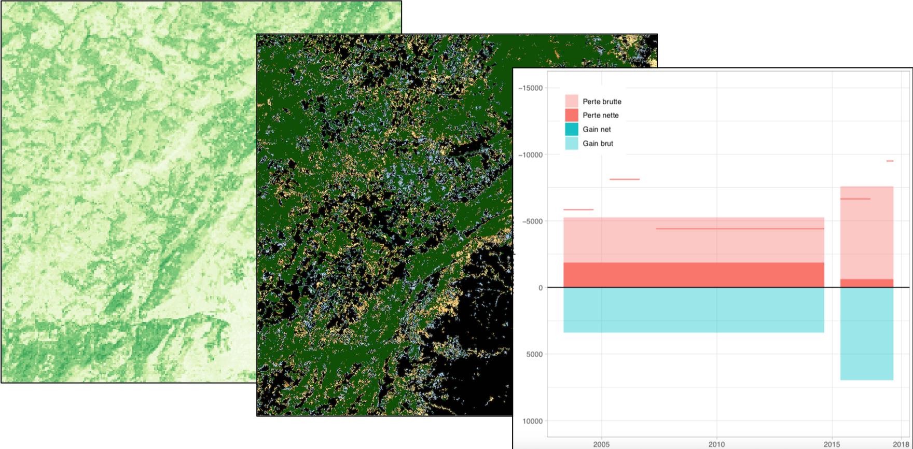

République Togolaise —
Système Nationale de Surveillance des Forêts
Système Nationale de Surveillance des Forêts
Manuel de référence
2020-03-15

Préface
Ce manuel de référence à comme objectif de décrire le fonctionnement du Système National de Surveillance des Forêts au Togo (SNSF). Les éléments traités sont les arrangements instutitionelles, l’implémentation de l’Inventaires Forestier National (IFN) et de Système Surveillance Terrestres par Satellite (SSTS) et l’approche technique pour en sortir les informations nécessaires pour le Niveau de Référence pour les Forêts du Togo (NRF) ainsi que pour le Monitoring, Reporting et Verification (MRV) dans le cadre de l’engagement du Togo pour le REDD+.
La partie Analyses NRF/MRV décrit en détail les outils utilisés pour établir et le Niveau de Référence pour les Forêts du Togo 1.0, soumis au sécrétariat CCNUCC en Janvier 2020 et pour mettre à jour les analyses dans le cadre d’une surveillance de la biomasse forestier continue dans le cadre du Monitoring, Reporting et Verification pour la REDD+. Les résultats de ces analyses sont publiés ailleurs (liens sur les rapports sur le site CCNUCC et géoportail).
En cas de questions, veuillez contacter la Coordination nationale REDD+ du Togo